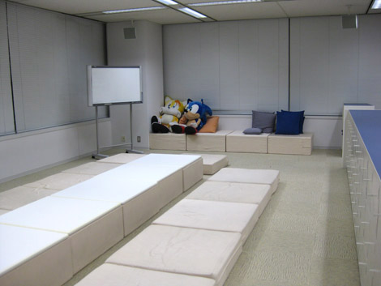
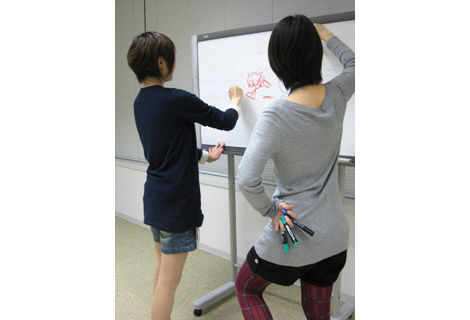
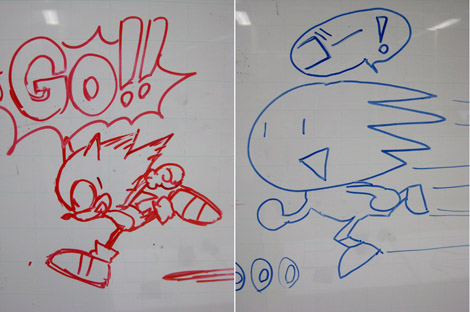

『キャラクターうろ覚えイラスト対決！ (前編)』
2009年01月15日
こんにちは！ マツバラです。
本日は、meraoさんのリクエストにありました
『SWA』登場キャラクターのうろ覚えイラスト対決をするため
ソニックルームに来ています！
こんにちは。ヨシノです。
「ん？ 何のこと？」という方は、
こちらの記事をご参照くださいませ～。
ちなみに、
「ソニックルーム」とは当部署の会議室です。

当部署最大の会議室、ソニックルーム
椅子に座って会議をするよりも
こういった場所でリラックスして座ったほうが
良いアイデアも出るのではないか？
……ということで、このような一風変わった会議室になってます。
『SWA』の定例会議なども
ここで行われていました。
今回は、
写真奥に見えるホワイトボードに
『SWA』キャラクターを描いていきます♪
覚え書きかあ……資料も何も見ずに描くんだよね。
大丈夫かなあ。
『SWA』スタッフとして、恥ずかしい絵は晒せないし。
ちょっと緊張。
大丈夫だよ、ヨシノ！
だって私たち、『SWA』開発のために
1年以上も毎日毎日『SWA』キャラクターを見て過ごしてきたんだよ？
む。
暑い夏の日も、木枯らしが吹いた日も
ずっとソニックたちの姿を見つめ続けたんだもん！
きっと心がソニックたちの姿を覚えてるよ！
……そっか、そうかもね。
よし、じゃあ、初めのお題は？
まずはもちろん、ソニックでしょう！
お題は「音速で走るソニック」！
よ～し。
がんばる。

悩みながら描くヨシノ(奥)と、自信満々でペンをはしらせるマツバラ(手前)
そして、数分後……
できたっ♪
うん、私も。
[ ヨシノ画 ] [ マツバラ画 ]

待て。
おっ、ヨシノ、なかなか上手いね♪
いや、そうじゃなくて。
マツバラ、何それ。
もちろん、ソニックきゅんだよ☆
……こ、これはひどい……
なんで耳が無いの？
あれっ、忘れてた。
なんで足元にドーナツが……
やだなあ、それはリングだよ！
……なんか、
もう終了したほうがいいんじゃないかって気がしてる。
これ絶対、アートディレクターの川村さんに怒られるよ。
よ～し、どんどんいくよ！
じゃあ次のお題は
かわいい「チップ」を描いてみよう！
(聞いてない、こいつ)
というわけで、後半に続きます☆
---------------------------------------
追記
当ブログでは、皆さまの
ご意見ご感想を募集しています！
ブログの右メニューにある
「ご意見・ご要望はこちら」というリンクから、どうぞ。
尚、頂いたメッセージは、
予告なくネタに……じゃなく、掲載されることがあります。
ご注意くださいませ。
当ブログは、
皆さまと『SWA』スタッフをつなぐ
架け橋になれば良いと考えておりますので……
ご質問やリクエスト、
ゲームの感想など！
なんでもお待ちしております☆
日時: 2009年01月15日 14:30 | パーマリンク


 ソニックを愛する、元気な『SWA』2年目プランナー。
ソニックを愛する、元気な『SWA』2年目プランナー。 マイペースな『SWA』2年目プランナー。
マイペースな『SWA』2年目プランナー。
 ご意見・ご要望はこちら
ご意見・ご要望はこちら RSS
RSS